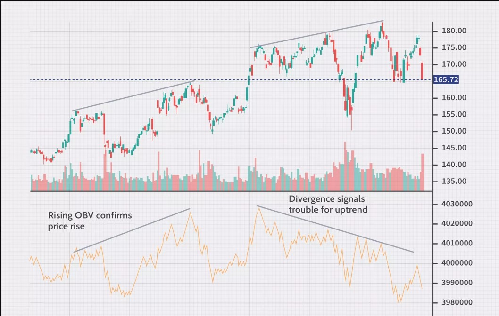
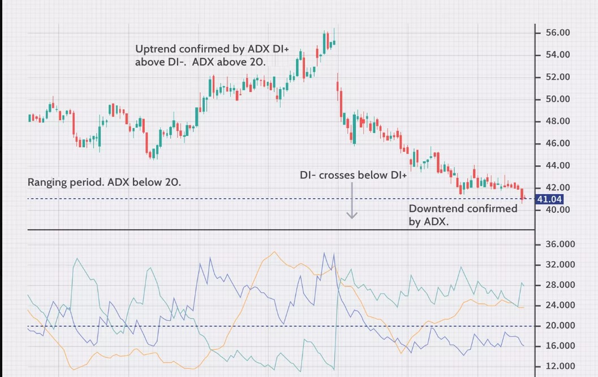

Volume
The indicator is a running total of up volume minus down volume.
Up volume is how much volume there is on a day when the price rallied. Down volume is the
volume on a day when the price falls. Each day volume is added or subtracted from the indicator
based on whether the price went higher or lower.
When OBV is rising, it shows that buyers are willing to step in and push the price higher. When OBV
is falling, the selling volume is outpacing buying volume, which indicates lower prices. In this way,
it acts like a trend confirmation tool. If price and OBV are rising, that helps indicate a continuation
of the trend.
Traders who use OBV also watch for divergence. This occurs when the indicator and price are going in
different directions. If the price is rising but OBV is falling, that could indicate that the trend
is not backed by strong buyers and could soon reverse.

Average Directional Index
The average directional index (ADX) is a trend indicator used to measure the strength and
momentum of a trend. When the ADX is above 40, the trend is considered to have a lot of directional
strength, either up or down, depending on the direction the price is moving.
When the ADX indicator is below 20, the trend is considered to be weak or non-trending.
The ADX is the main line on the indicator, usually colored black. There are two additional lines that
can be optionally shown. These are DI+ and DI-. These lines are often colored red and green,
respectively. All three lines work together to show the direction of the trend as well as the momentum
of the trend.
ADX above 20 and DI+ above DI-: That's an uptrend.
ADX above 20 and DI- above DI+: That's a downtrend.
ADX below 20 is a weak trend or ranging period, often associated with the DI- and DI+ rapidly
crisscrossing each other.